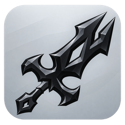
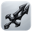
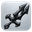
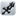

Galo vermelho e branco, minimalista: só formas básicas e o mesmo desenho do tamanho grande ao de 16 px, sem versão simplificada. As imagens são os pixels reais que o Windows vai mostrar.

Espada do BORK em relevo sobre quadrado prateado e brilhante. Destoa do aplicativo, que é escuro e chapado, e se perde em barra de tarefas clara.



Arquivos prontos para trocar quando aprovado: design/propostas/icone/ico/<letra>.ico (16 a 256 px). Desenho em svg/; para regenerar: gerar.py, render.cjs e gerar.py --ico.